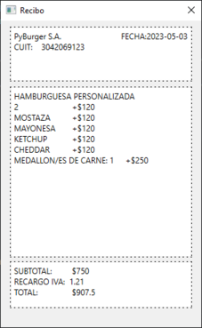

Se trata de un proyecto que realizamos entre dos amigos, fue presentado como examen integrador final de primer año de programacion, esta hecho en python 3.10 importando la biblioteca PySide6, que hace de binding para las herramientas de interfaz gráfica de usuario (GUI) de Qt.

Recrea un menu de autoservicio de una cadena de comida rapida ficticia llamada Pyburger, busca cuales son las opciones que esten en el menu y muestra una foto con el nombre de la hamburguesa seleccionada, junto a una breve descripccion del producto y sus ingredientes, luego de confirmar la compra imprime un recibo donde se muestra la fecha y hora de emicion de este, junto a la orden completa del cliente y el monto total a pagar.
Decidimos agregar una opcion donde le permita crear una hamburguesa al cliente con ingredientes personalizados, le mostraria todos los ingredientes disponibles y dependiendo de lo que el cliente escoja, en el recibo le cobrara mas o menos dinero segun la cantidad de ingredientes utilizados. Ademas implementamos un panel administrador donde solo se puede acceder con contraseña, que permite agregar o eliminar hamburguesas del menu como tambien agregar o eliminar ingredientes. Todos estos ingredientes y hamburguesas son guardadas en JSONs, y el programa esta diseñado para no romperse por mas ingredientes o hamburguesas que el administrador agrege o elimine.
